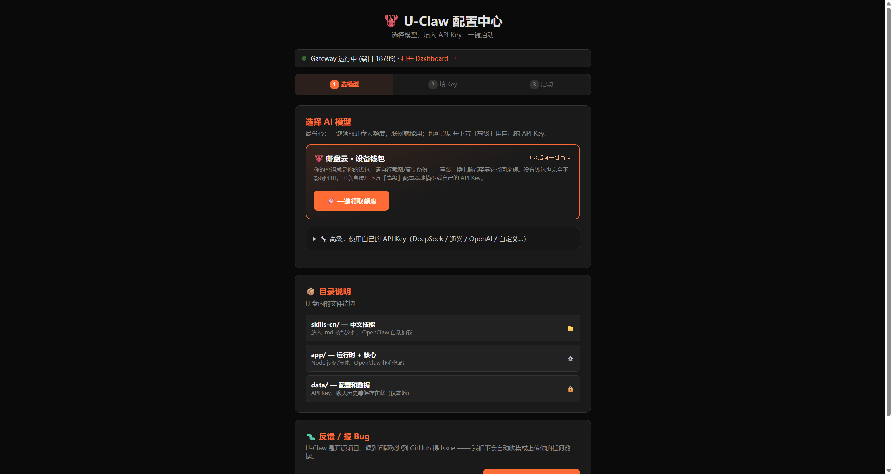
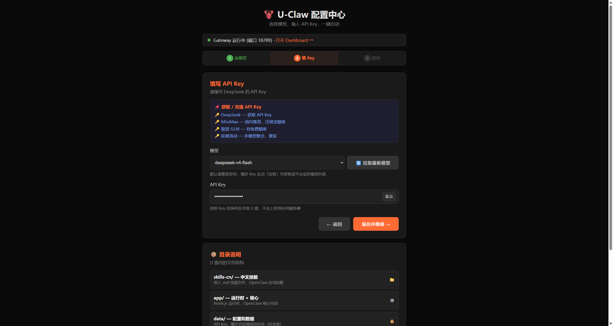
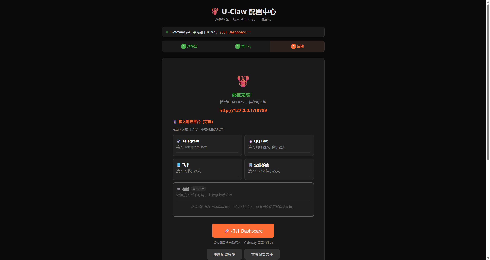

把整个 U-Claw 文件夹放进 NTFS 格式的 U 盘后，按下面步骤操作即可。首次使用建议保持联网，以便完成模型或渠道配置。
Windows-Start.bat。Mac-Start.command。首次启动会打开配置中心；以后启动完成后可直接进入对话页面。
推荐直接选择 「虾盘云·设备钱包」，点击一键领取额度即可开始使用；这是默认路径，不需要填写 API Key。
若要使用自己的模型账号，请展开 「高级：使用自己的 API Key」，再选择 DeepSeek 等模型服务。
⚠️ 重要：选择设备钱包时，你的密钥就是你的钱包——请按页面提示备份好密钥。重装系统、换电脑、U 盘损坏后，都要靠它找回余额；丢失即无法找回。

这一步只在上一步选择自己的模型账号时出现。粘贴从模型服务商获取的 API Key，点击「保存并继续」。使用设备钱包时可跳过本步。

以下「第 4、5 步」都发生在配置中心的第 3 步（启动页）里。
需要在聊天软件中使用时，可按卡片提示接入 Telegram、QQ、飞书或企业微信。微信目前显示「暂不可用」，待上游修复后会恢复。

不接入聊天平台也不影响直接在浏览器中对话。
点击「打开 Dashboard」即可开始对话。启动脚本会自动打开正确地址；如果需要手动打开，地址是 http://127.0.0.1:18789/#token=uclaw（端口可能因占用顺延，以启动窗口提示为准，#token=uclaw 不能省）。